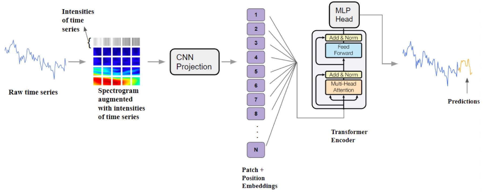
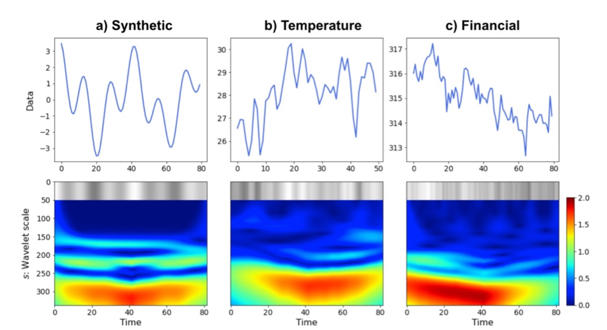
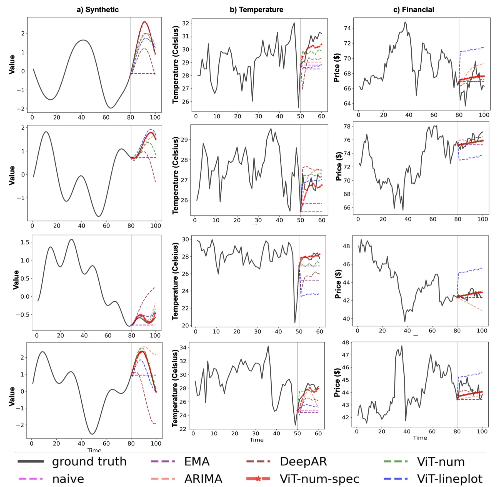

Abstract
Time series forecasting plays a crucial role in decision-making across various domains, but it presents significant challenges. Recent studies have explored image-driven approaches using computer vision models to address these challenges, often employing lineplots as the visual representation of time series data. In this paper, we propose a novel approach that uses time-frequency spectrograms as the visual representation of time series data. We introduce the use of a vision transformer for multimodal learning, showcasing the advantages of our approach across diverse datasets from different domains. To evaluate its effectiveness, we compare our method against statistical baselines (EMA and ARIMA), a state-of-the-art deep learning-based approach (DeepAR), other visual representations of time series data (lineplot images), and an ablation study on using only the time series as input. Our experiments demonstrate the benefits of utilizing spectrograms as a visual representation for time series data, along with the advantages of employing a vision transformer for simultaneous learning in both the time and frequency domains.
Core contributions
- 1Spectrograms, not line plotsA time-frequency image shows how a series’ rhythms change over time, which a plain line plot hides.
- 2Keeping the signA strip of the raw values on top restores what a spectrogram loses: whether the series is going up or down.
- 3Time and frequency togetherA vision transformer learns across both at once, patch by patch along the time axis.
- 4Three kinds of dataSynthetic signals, Australian daily temperatures and S&P 500 stock prices.
- 5Strong baselinesCompared with naive, EMA, ARIMA, DeepAR, a line-plot vision transformer and a values-only ablation.
- 6Better forecastsLowest error on synthetic and temperature data, and the best thresholded direction accuracy on stocks.
Method
1Time series as an image
We convert each series into a Morlet wavelet spectrogram: rows are wavelet scales (high frequencies at the top, low at the bottom) and columns are time. Wavelets suit financial data better than a short-time Fourier transform because they capture short, non-periodic bursts. Since a spectrogram shows only signal strength, we add a strip of the scaled raw values on top, giving a 128 × 128 image.

2Vision transformer
The image is cut into 16 × 16 patches, so each column of patches is a slice of time. A transformer encoder learns how time and frequency patterns depend on each other across these slices, and a lightweight MLP head outputs the forecast. We call this model ViT-num-spec.
3Data and baselines
We forecast 20 steps from 80 on 150K synthetic two-timescale signals and 58K S&P 500 stock series, and 10 steps from 50 on daily temperatures from 422 Australian weather stations. We compare with naive, EMA, ARIMA and DeepAR, a vision transformer on line plots (ViT-lineplot), and one on the raw values alone (ViT-num).
Results
- Best overall: ViT-num-spec has the lowest SMAPE and MASE on synthetic and temperature data.
- Spectrograms beat line plots: ViT-lineplot is the weakest vision model, especially on stocks, while both spectrogram and value inputs help.
- Direction on stocks: counting only moves larger than 20% of past volatility, ViT-num-spec calls the direction right 58.4% of the time, above always guessing the dominant trend (55.7%).
| Method | SyntheticSMAPE ↓ | TemperatureSMAPE ↓ | Stocksdirection ↑ |
|---|---|---|---|
| Naive | 1.234 | 0.134 | 0.0% |
| EMA | 1.242 | 0.132 | 50.7% |
| ARIMA | 0.549 | 0.136 | 50.9% |
| DeepAR | 1.073 | 0.128 | 53.0% |
| ViT-lineplot | 0.531 | 0.135 | 50.5% |
| ViT-num | 0.376 | 0.132 | 57.4% |
| ViT-num-spec (ours) | 0.304 | 0.125 | 58.4% |
Stock direction accuracy counts only moves larger than 20% of the standard deviation of the past series. Full results with MASE and standard deviations are in Table 1 of the paper.
Show example forecasts (paper Fig. 4)

BibTeX
@inproceedings{zeng2023pixels,
title = {From Pixels to Predictions: Spectrogram and Vision
Transformer for Better Time Series Forecasting},
author = {Zeng, Zhen and Kaur, Rachneet and Siddagangappa, Suchetha
and Balch, Tucker and Veloso, Manuela},
booktitle = {Proceedings of the Fourth ACM International Conference
on AI in Finance (ICAIF)},
year = {2023},
doi = {10.1145/3604237.3626905}
}